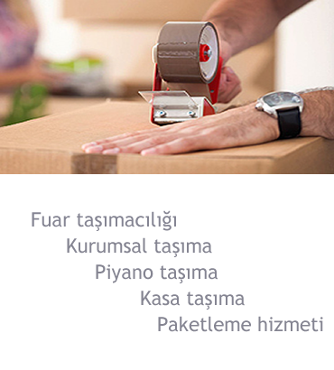
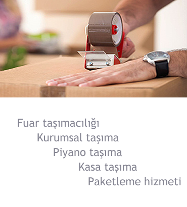

Banka Taşımacılığı

Nakliyat sektörünün bir parçası olan kurumsal taşımacılık nedir?Öz Avcılar nakliyat firmasının bir bölümü olduğundan dolayı müşterilerimizin bu alanda bizden kaliteli bir hizmet alacağına garanti verebiliriz. Kurumsal taşımacılık, kamu ve özel organizasyonların bir yerden başka bir yere taşınmasına verilen isimdir. Ayrıca evden eve ve parça taşımacılığı gibi taşımacılıklardan farklılık gösteren kurumsal taşımacılık işlemin büyüklüğüne göre önceden belirlenen denetmen yada denetmen heyeti gözetiminde gerçekleştirilen bir yöntemdir. Bizde bu alanda kendimize güvenerek uzun zamandır kaliteli bir hizmet veriyoruz. Müşterilerimiz her zaman bu konuda bize övgü dolu cümlelerini esirgememişlerdir. Taşımacılığın her alanı dikkat gerektirir şüphesiz, ancak kurumsal taşımacılık gereken özen ve titizlikle yürütülmesi gereken bir taşımacılıktır. Yılların verdiği deneyim, iş ahlakı ve prensipli çalışmanın en büyük karşılığıdır sizin memnuniyetiniz.Öz Avcılar nakliyat olarak bizim için en önemlisi eşyalarınızın zarar görmemesi ve hiçbir sorun yaşamamanızdır. Bunların oluşmaması için gereken zemin sağlandıktan sonra taşıma işlemi gerçekleştirilir. Kurumsal taşımacılık hizmetimiz ile asla gözünüz arkada kalmasın. Gereken düzen ve nizam tarafımızca karşılanacaktır. Ofis içerisinde bulunan tüm eşyalarınız gereken ambalajlama ve kutulama yöntemlerimizle en güvenli şekilde denilin en adrese teslim edilir. Profesyonel ekibimiz kurumsal taşımacılık konusunda gereken tüm düzeni sağlarlar. Sizlerin bu konuda rahat olmasını ve sadece yeni ofisinizin düzenine odaklanmanızı istiyoruz. Kurumsal taşımacılık tamamen bizim işimizdir. Kurumsal taşımacılık konusunda aklınıza takılan tüm soruları bizlere sorabilirsiniz. Çünkü işyeri veya ofis eşyalarınızı bizlere emanet edeceğinizden dolayı asla aklınızın kalmasını istemeyiz. Biz sadece sizin için buradayız. Bu sektörde ise lider bir firma olarak listenin ilk sırasındayız. Kurumsal taşımacılık alanında edindiğimiz bir çok görevi layığı ile yerine getirdik. Taşınacağınızın ofisinizde iş düzeni elbette çok önemlidir. Ortamın rahat ve düzenli olması gerekir. Tüm eşyalarınızın bir çizik almadan ve yerli yerine oturması gerekir. Taşıma sırasında tüm eşyalarınızın paketleme ve ambalajlama işleri ile tek tek ilgilenip hasar görmemesini sağlıyoruz. Öz Avcılar nakliyat olarak kurumsal taşımacılık sektöründe taşınacak gerekli malzemelerin hazırlığı yapıldıktan sonra gidilecek noktaya sorunsuz bir şekilde taşınması sağlanmaktadır. Ofis ve işyeri eşyalarının taşınmasının yanı sıra, eğitim, sağlık, okul, fabrika, banka gibi pek çok kurumun taşımacılık işlerini seri bir şekilde gerçekleştiriyoruz. Araçlarımız ise bu sektöre bağlı olarak donanımlı ve büyüktür. Yani, tüm eşyalarınızı bir seferde itinalı bir şekilde taşıyarak güveninizi kazanıyoruz. Başarılı ve kusursuz taşımacılığın tam karşılığı Öz Avcılar nakliyat şirketidir. Kurumsal taşımacılık demek artık Öz Avcılar nakliyat demektir. İşimize olan saygımızı verilen her görevde rahatlıkla ortaya koyabiliyoruz. Biz birlikte kocaman bir aileyiz. Uzman personellerimizle taşımacılık sektöründe akıttığımız her terin karşılığı sizin mutluluğunuz olsun…
 


SERVİS HİZMET PROSEDÜRÜ


Hizmetlerimiz
Referans
ADRES
Kemalpaşa Namık Kemal Cd. No:27 34204Bağcılar/İstanbul
TEL 1 : 0212 432 77 33
TEL 2 : 0212 432 77 34
CEP : 0532 414 52 77
info@ozavcilarnakliyat.com
www.ozavcilarnakliyat.com